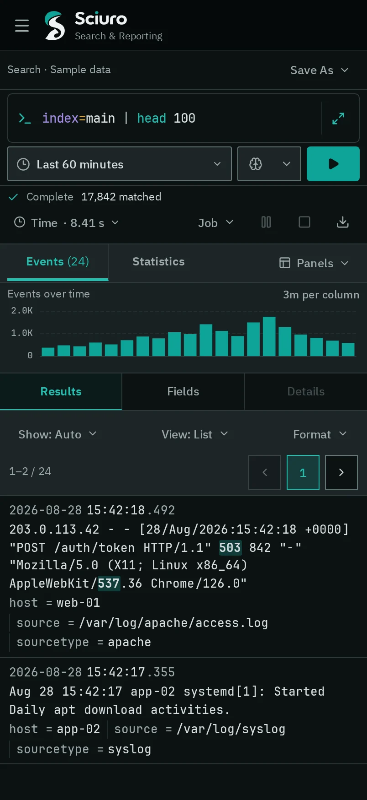
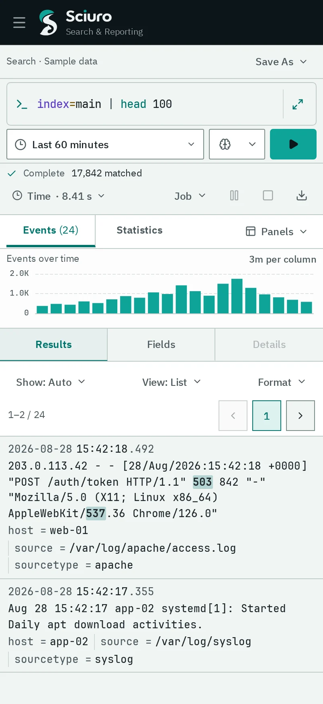

Log search and operations, on your infrastructure.
Sciuro collects and indexes machine data, lets your team investigate it with SPL-style search, and turns saved searches into scheduled alerts — on servers you control.
One system for collecting, searching and acting on logs.
01 / COLLECT
Bring data in
Receive events over HTTP, syslog and file inputs, or forward them from other hosts. Each input assigns index, host, source and sourcetype at ingest.
HEC
Sciuro TCP
TCP/UDP syslog
File monitor
Script
Host metrics
OTLP logs
02 / SEARCH
Investigate
Write pipeline queries, read raw events beside a timeline, and switch to statistics when a query transforms its results.
40+ commands
70+ eval functions
Fast · Smart · Verbose
Field summary
03 / ACT
Schedule and alert
Save a search, run it on a cron schedule, and trigger actions when its alert condition matches. Every firing keeps a link to the job that produced it.
Cron schedules
Webhook
Log event
Summary index
Suppression
Search workspace
The query, the job and the result stay on one screen.
The composer, job status, timeline, fields and results keep their place while you refine a search, so the context of an answer is never more than a glance away.
Choose Fast, Smart or Verbose to trade field discovery for speed on each run.
Job controls
Pause, resume or cancel a running search. Finished jobs keep their results for a lifetime you can extend.
Isolated workers
Searches run in separate worker processes and can spill large intermediate results to disk.
Jobs & alerts
Know what is running, and what fired.
Every search runs as a job with an owner, an app and a lifecycle. Saved searches run on a schedule and keep a history of each firing and the actions it triggered.
Queued, running, paused and completed jobs with events, results, scanned volume and duration.
See which inputs are receiving, what they assign at ingest and how much they have received. Configuration and access control live in Settings, next to the data they govern.
Sourcetypes set line breaking, timestamps, and JSON or regex field extraction, with a preview before you save.
Enrichment
CSV lookups, automatic lookups and an uploaded GeoIP database for iplocation.
Access
Roles combine capabilities, allowed indexes and search limits. Saved searches carry an owner, an app and sharing permissions.
Interface
Built for long investigations, from a 4K desk to a phone.
Calm by defaultHealthy status recedes. Colour is kept for state that changed and for data you need to compare.
Exact where it mattersQueries, raw events, timestamps and numbers use a monospaced data face; reading and controls use a sans face.
Three official themesSciuro Dark, Light and High Contrast, with contrast checked for body text, labels and controls.
English and KoreanThe interface is written in both languages with the same task intent.


Deployment
Runs where your data already is.
Self-hostedRun Sciuro on servers you operate. Ingestion, indexing and search happen there, under your control.
Rust-nativeThe server, the forwarder and the offline query tool are written in Rust.
Durable ingestionHEC acknowledgements and file-monitor checkpoints advance only after events reach durable storage.
ForwarderCollects files, command output, Docker, journald, host metrics and OTLP logs, buffers them in a disk queue and sends them to Sciuro, optionally over TLS.
StorageA compressed raw journal with inverted indexes, retention by age or total size, and a durability policy per index.
Familiar workflowsAn HEC-style event endpoint and SPL-style search keep existing collection and query habits usable.
About these screensThe images on this page show the next Sciuro interface, currently in development, rendered with sample data. They are not live search results.
Get in touch
See Sciuro on your own data.
Tell us about your log sources and how your team searches today.